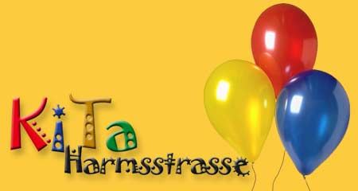
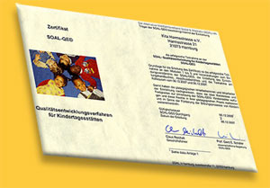

Über Uns: Unsere Geschichte und unser Elternverein
Der gemeinnützige Elternverein „Kindertagesheim Harmsstraße e.V.“ wurde 1996 gegründet und ist der Träger des Kindergartens.
Das Gebäude unseres Kindergartens wurde 1998 als eines der letzten Kindertagesheime im Stadtteil erbaut. Es befindet sich direkt am Rande des als Park genutzten „Alten Friedhofes“ und ganz in der Nähe des Harburger Stadtparks „Außenmühle“.
Am 1. Oktober 1998 begann der Kindergartenbetrieb mit einer Leiterin, zwei Erzieherinnen und 20 Kindern. Mittlerweile bietet unsere Einrichtung Betreuung von Kindern ab 10 Monaten in einer Krippengruppe und drei Elementargruppen. |
 |
Unser Konzept
Im Mittelpunkt unserer KiTa stehen die Kinder mit ihren Bedürfnissen. Hier bekommen sie die Möglichkeit, sich ihren Interessen und Fähigkeiten entsprechend zu entfalten und dabei einen verantwortlichen Umgang miteinander zu entwickeln. Jedes Kind wird mit seinen altersgemäßen Äußerungen, Bedürfnissen, Problemen und kulturellem Hintergrund ernst genommen.
Den Kindern werden Freiräume zum Spielen, Entdecken und Sich-selbst-Entfalten geboten, so dass sie sich entsprechend ihren individuellen Bedürfnissen und Fähigkeiten entwickeln können. Das Lernen in der Gruppe vermittelt den Kindern Solidarität und Achtung voreinander, ohne sie in geschlechterspezifischem Rollenverhalten festzulegen.
Unsere Erzieherinnen leisten in engem Kontakt zu den Eltern familienergänzende Arbeit. Sie eröffnen den Kindern die Welt und helfen ihnen, dabei Mut und Phantasie zu entwickeln. So wird das Selbstbewusstsein der Kinder gestärkt. Dabei verfolgen sie aufmerksam die Interessen und Themen der Kinder und unterstützen sie in ihrer Entwicklung. Die Erzieherinnen vermitteln den Kindern Bildung und die Teilnahme am öffentlichen Leben.
Unser Konzept ist kein starres Papier, sondern wird regelmäßig überprüft, inwieweit es den Anforderungen und Wünschen von Kindern, Eltern und Erzieherinnen entspricht und dementsprechend verändert
Vollständiges KONZEPT als PDF |
|
Das Team
Neun pädagogische Mitarbeiterinnen sind in Voll- bzw. Teilzeit in der Kindertagesstätte beschäftigt. Außerdem absolvieren regelmäßig Schüler und Schülerinnen sowie Studenten und Studentinnen mit unterschiedlichen pädagogischen Berufszielen ihr Praktikum bei uns im Haus.
Pädagogisches Personal:
- Hava Bozkurt (Leitung)
- Sylvia Kebellus (Stellvertreterin, Erzieherin, Motopädagogin, Kinderschutzfachkraft, Fachfrau für Bewegung)
- Christine Bremer (Erzieherin, Fachfrau für Rollenspiel und Sprache)
- Annette Pfanzler (Erzieherin, Fachfrau für Gestalten, QE-Beauftragte, Leitung der Vorschul-AG)
- Carmen Moje (Erzieherin)
- Jasmin Talaga (Kinderpflegerin, Multiplikatorin für Sprachförderung, Fachfrau für Rollenspiel und Sprache)
- Christine Drews (Erzieherin, Fachfrau für Bewegung)
- Nancy Kinne (Kinderpflegerin, Fachfrau für Gestalten)
- Stephanie Voigt (Erzieherin)
Max Segelken absolviert zurzeit sein Freiwilliges Ökologisches Jahr in unserer Einrichtung.
Für unseren Englischkurs steht Emily Hofmann als Honorarkraft zur Verfügung.
Für den reibungslosen Ablauf aller hauswirtschaftlichen Tätigkeiten sowie für eine exzellente Verpflegung sorgen unsere beiden - Hauswirtschaftsleiterinnen sowie eine Küchenhilfe. Die tägliche Reinigung erfolgt durch drei teilzeitbeschäftigte Raumpflegerinnen.
Hauswirtschaft:
- Silvia Guse (Hauswirtschaftsleiterin)
- Sabine Mewes (Hauswirtschaftsleiterin)
- Christine Talaga (Küchenhilfe)
Qualität
Bei der Betreuung der uns anvertrauten Kindern setzen wir auf Qualität hinsichtlich:
- Pädagogik
- Gestaltung des Hauses und des Außengeländes
- Zusammenarbeit mit Institutionen im Stadtteil
- Weiterbildung unseres Personals
Unsere Einrichtung ist Mitglied des SOAL (Alternativer Wohlfahrtsverband, Sozial& Alternativ) und beteiligt sich seit 2005 an dessen Qualitätsentwicklungsverfahren SOALQE© für Kindertagesstätten. SOALQE© unterstützt die Selbstbildung, die demokratische Selbstorganisation, Teilnahme und Teilhabe an einem Entwicklungsprozess, die Wertschätzung. Im Mittelpunkt der SOALQE© stehen die Bedürfnisse, Interessen und Gestaltungsanliegen der Kinder. |
Die im SOALQE© festgeschriebene Beobachtungen von Kindern ist Grundlage dafür die Bedürfnisse von Kindern wahrzunehmen. Daraus wiederum lassen sich ableiten, welche Materialien, Räume, Angebote, Projekte wichtig und interessant sind und wie wir dem einzelnen Kind individuelle Unterstützung bieten können. Die Dokumentation erfolgt in Form von Fotos, Videoaufnahmen, Texte etc. Sie ist Grundlage für die Reflexion unserer Arbeit und verschafft Eltern einen Einblick in den KiTa-Alltag. Weitere Informationen zum SOALQE© direkt auf der Webseite des SOAL.
Unsere KiTa erhielt im Dezember 2007 das SOALQE©-Zertifikat, und damit eine offizielle Bestätigung, dass unsere Prozesse und Dienstleistungen mit festgelegten Anforderungen konform sind die SOALQE© Zertifizierung. Diese ist zeitlich befristet, der QE-Prozess wird weitergeführt.
Voraussetzung für die (Weiter-)Entwicklung von Qualität ist, dass die Erzieherinnen selbst im Austausch mit neueren fachlichen Ergebnissen stehen. Dies geschieht durch Fortbildung u.a. bei unserem Trägerverband dem SOAL. |
 |
|
Neben der regelmäßigen Teilnahme an Fortbildungen bilden Informationen, die in regelmäßigen Dienstbesprechungen reflektiert werden, ebenso wie Leiterinnentreffen und Supervision die Grundlage für qualitätsorientierte Betreuung. |
Eltern
Die Eltern sind uns natürlich herzlich willkommen. Unser Haus ist für alle Familien offen, welche Nationalität sie auch haben. Die Arbeit mit den Kindern erfordert einen ständigen Austausch zwischen den Erzieherinnen und dem Elternhaus. Eltern sollen erleben, wie ihre Kinder die Zeit in unserer KiTa verbringen - sie sind deshalb eingeladen in den Gruppen zu hospitieren. Auf Aktionstagen, wie z.B. den Gartentagen, haben die Eltern und die Erzieherinnen die Gelegenheit zu gemeinsamen Tun und Austauschen.
|